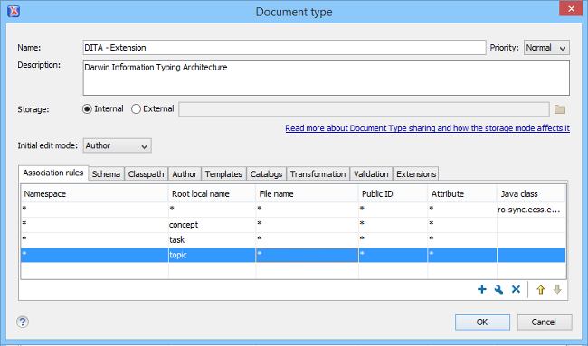

Frameworks
A framework configuration provides validation, content completion, and visual editing functionality for a certain XML vocabulary. Usually, a framework customization provides a schema used to validate and edit certain type of XML documents, a CSS used to edit the XML documents in the Author visual editing mode and various custom actions or behaviors used to enhance the editing experience. For more information about framework customization, see: https://blog.oxygenxml.com/topics/oxygenFrameworks.html.
Oxygen XML Editor comes with a lot of framework configuration folders ([OXYGEN_INSTALL_DIR]/frameworks) to support editing XML documents of various types (such as DocBook, DITA, XHTML, or TEI). All of these existing framework configurations can be further customized in the Preferences->Document Type Associations page. These framework configurations can be used as examples for building your own customization for a certain XML vocabulary or they can be extended if you want to share a modified version of a framework with others.
The Document Type Association configuration dialog box allows you to configure all the framework-specific settings.

You can also find various open-source frameworks for Oxygen XML Editor online: https://blog.oxygenxml.com/topics/Oxygen%20plugins%20and%20frameworks.html.
Once you have set up a framework configuration folder, it can be packaged as an add-on and shared with others or it can be packaged in workspace access plugins using the "additional framework" extension point in the plugin.xml file.